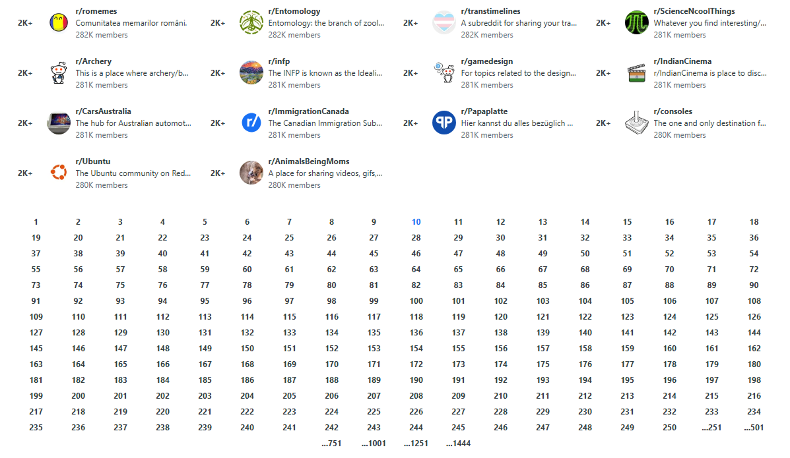
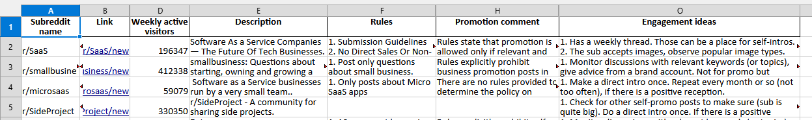
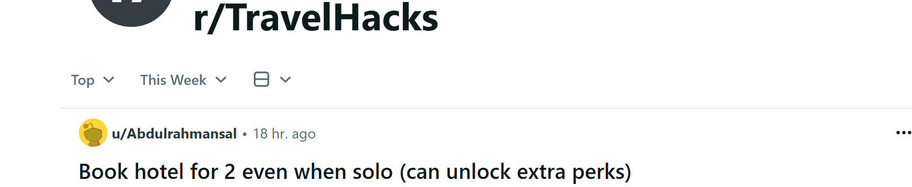
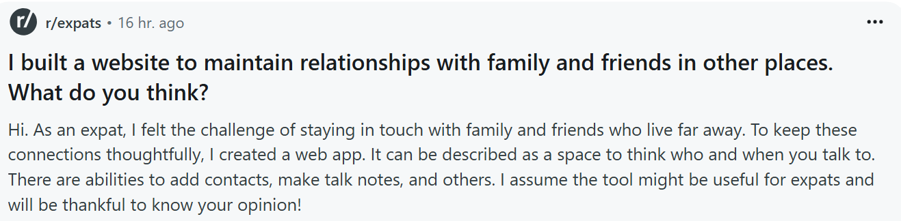

Reddit research
Our specialization is Reddit community research. We can find subreddits (Reddit groups) with your target audience, extract stats and rules, and make engagement recommendations.
In other words, we make the Reddit marketing strategy that is custom to your brand.
Find relevant subreddits for your brand
We identify Reddit groups where your audience
is the most likely to spend time.

Create a Reddit marketing strategy
We recommend suitable approaches to engage people on Reddit: posts, comments, ads, your own subreddit, etc.

Subreddit top posts analysis
We study top posts and users from selected subreddits
to show you the best content formats.

Create a post text for Reddit
We generate a Reddit post similar to other popular posts
in a particular subreddit.

The team has completed more than
40 projects
focused on subreddit research, audience analysis, and marketing strategy for Reddit.
Read more about our background →